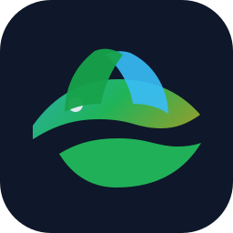

🌎 Ecosistemas e interacciones
Reconocer organismos, poblaciones, comunidades e interacciones biológicas dentro de un sistema acuapónico escolar.

🌿 Proyecto pedagógico para 1° medio · Chile
Este sitio enseña cómo funciona un sistema acuapónico escolar: peces, bacterias nitrificantes, plantas, agua, temperatura y monitoreo diario. Está pensado para estudiantes de 1° medio que investigan ecosistemas, interacciones biológicas, flujos de materia y energía, y el uso de sensores para resolver problemas reales.
Alineación formativa
Reconocer organismos, poblaciones, comunidades e interacciones biológicas dentro de un sistema acuapónico escolar.
Comprender cómo circulan el nitrógeno, el agua y la energía en un sistema vivo-tecnológico conectado.
Medir temperatura, registrar datos, formular hipótesis, construir gráficos e interpretar patrones observados.
Base conceptual
Los peces liberan desechos al agua. Estos aportes generan compuestos nitrogenados que, si se acumulan, pueden afectar su bienestar.
Las bacterias transforman el amonio en nitritos y luego en nitratos, formas más aprovechables para las plantas.
Las raíces absorben nutrientes del agua y ayudan a mantener el sistema más equilibrado.
El agua vuelve al tanque, cerrando el ciclo. El monitoreo constante permite detectar variaciones relevantes.
Innovación escolar
Medir
Registrar
Graficar
Interpretar
Proponer mejoras
Exploración guiada
Formula una predicción sobre la relación entre temperatura y conducta de los peces.
Identifica variable independiente, dependiente y variables de control.
Independiente: temperatura del agua. Dependiente: conducta observable o alimentación. Control: horario, cantidad de alimento, especie de pez.
Redacta una conclusión breve en base a la evidencia recogida.
Seguimiento diario
Visualización
| Fecha | Equipo | Agua | Ambiente | Peces | Plantas |
|---|
Experiencias inmersivas
Explora el sistema acuapónico en una escena interactiva con sus componentes principales.
Abrir visor 3DUsa el celular para visualizar una maqueta informativa sobre el flujo del agua y del nitrógeno.
Abrir experiencia ARRecorre un laboratorio escolar virtual con estaciones de observación y preguntas guiadas.
Abrir experiencia VREvidencia de aprendizaje
1. ¿Qué organismo transforma compuestos nitrogenados en el biofiltro?
2. ¿Qué dato ayuda a relacionar bienestar de peces y condiciones del sistema?
3. La acuaponía combina principalmente:
Preguntas frecuentes
Sí. Está diseñado como sitio estático HTML, CSS y JavaScript sin backend propio. Para guardar en Google Sheets se usa Google Apps Script.
Sí. Puedes conectar lecturas de ESP32 o ESP8266 mediante Apps Script, una API externa o archivos JSON.
Sí. Tiene diseño responsive, tema claro/oscuro, mejoras de accesibilidad y puede instalarse como PWA.